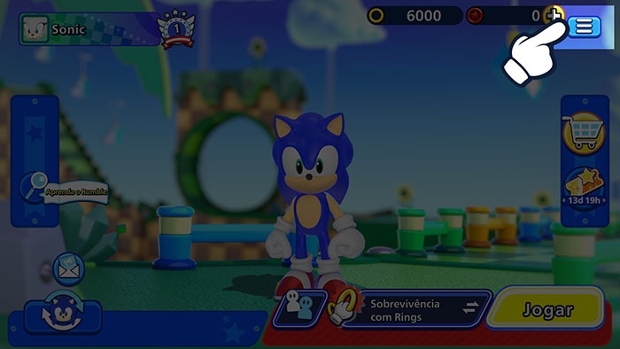
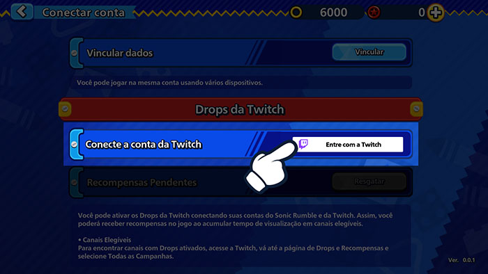
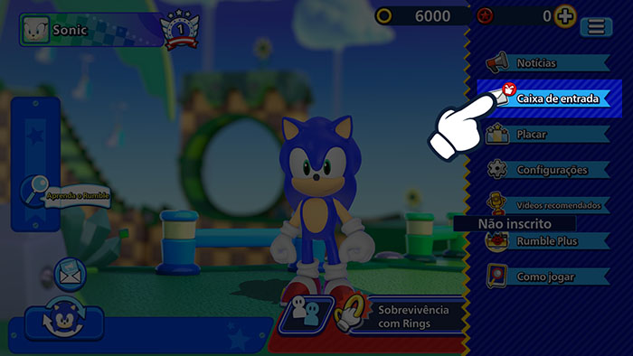

Drops da TwitchAssista a transmissões ao vivo e ganhe recompensas no jogo!
Drops da TwitchAssista a transmissões ao vivo e ganhe recompensas no jogo!
Vincule sua conta da Twitch agora!
Como Vincular sua Conta
1Clique no botão do Menu em Sonic Rumble.

2Vá para Configurações.

3Clique em Conectar Conta.

4Selecione Drops da Twitch e escolha Entrar com a Twitch para acessar sua conta da Twitch.

5Isso vinculará sua conta da Twitch à sua conta do Sonic Rumble.
Como aceitar recompensas
1Clique no botão do Menu em Sonic Rumble.

2Vá para sua caixa de entrada para ver suas recompensas.

*Pode ocorrer um problema com a coleta de recompensas se elas forem enviadas para sua caixa de entrada durante uma manutenção.
Se for o caso, vá para Menu > Configurações > Conectar Conta > Drops da Twitch e clique no botão Resgatar para reenviar as recompensas à sua caixa de entrada.
Perguntas frequentes
- QO que são Drops da Twitch?
- AUm tipo de evento que permite que você ganhe recompensas no jogo apenas assistindo a transmissões ao vivo na Twitch.
Para participar, basta vincular sua conta do Sonic Rumble à sua conta da Twitch. - QComo posso receber recompensas?
- AAtive o recurso de Drops da Twitch e assista a transmissões ao vivo de Sonic Rumble que cumpram as condições para encher sua barra de Drops. Você poderá receber recompensas quando a barra estiver cheia.
- QComo posso saber se estou atualmente participando dos eventos de Drops da Twitch?
- AAcesse a página de Inventário da Twitch aqui para verificar todos os eventos de Drops da Twitch dos quais você está participando e as recompensas que você recebeu.
- QQuanto tempo demora para as recompensas de Drops chegarem?
- ARecompensas são transferidas para sua caixa de entrada no jogo dentro de 24 horas.
Se quiser desvincular sua conta após receber suas recompensas, lembre-se de receber as recompensas na sua conta do Sonic Rumble antes de fazer isso. - QSe eu tiver várias contas do Sonic Rumble, posso resgatar recompensas para todas elas?
- ARecompensas de Drops da Twitch só podem ser resgatadas uma vez. Cada conta da Twitch também só pode ser vinculada a uma conta do Sonic Rumble por vez.
O mesmo tipo de recompensa não pode ser resgatado mais de uma vez para cada conta do Sonic Rumble vinculado a uma conta da Twitch.